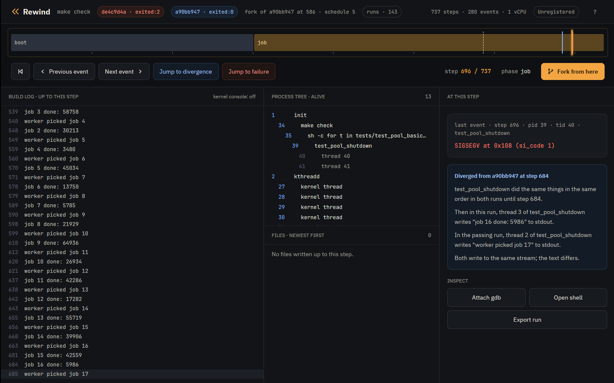

Tutorial · Container
Tutorial: a flaky test in a container
This tutorial takes a container image whose test suite fails now and then, makes Rewind VM find a failing run in under a minute, looks at the failure step by step, and checks the fix across 64 thread interleavings. It needs no Nix.
The image is built from mylib, a small C thread pool in
examples/mylib,
with the Containerfile next to its source. Its pool_shutdown frees the job
queue before joining the workers, and a worker that has finished a job checks whether the
pool is stopping without holding the lock, then counts the job through the queue. When
shutdown runs between that check and the count, the worker writes through a freed, nulled
pointer.
Every transcript below is real output from rewind on a 16 core AMD laptop, with
sudo rewind pmu enable run since boot.
Install
You need x86_64 Linux with KVM, Docker or Podman, and gdb for the step that uses it.
$ mkdir -p ~/.local/opt ~/.local/bin
$ curl -L https://github.com/fzakaria/rewindvm/releases/latest/download/rewind-x86_64-linux.tar.gz | tar -xz -C ~/.local/opt
$ ln -s ~/.local/opt/rewind-x86_64-linux/bin/rewind ~/.local/bin/rewind
$ ls -l /dev/kvm
crw-rw-rw- 1 root kvm 10, 232 Oct 1 20:17 /dev/kvm
The tarball, from the latest
release, holds a static
rewind, the VM's kernel and initramfs, and static mkfs.erofs and
GNU tar for turning root filesystems into images, so the host needs nothing else. Two more
tarballs from the same release unpack next to it: the kernel's debug symbols and source
files, for rewind gdb, and the desktop app, which uses the
rewind next to it:
$ curl -L https://github.com/fzakaria/rewindvm/releases/latest/download/rewind-debug-x86_64-linux.tar.gz | tar -xz -C ~/.local/opt
$ curl -L https://github.com/fzakaria/rewindvm/releases/latest/download/rewind-app-x86_64-linux.tar.gz | tar -xz -C ~/.local/opt
$ ln -s ~/.local/opt/rewind-app-x86_64-linux/bin/rewind-app ~/.local/bin/rewind-app
If /dev/kvm is not readable and writable by you, add yourself to the
kvm group with sudo usermod -aG kvm $USER and log in again.
Runs are kept under ~/.local/share/rewind. Set REWIND_HOME to
keep them somewhere else.
The flaky test
Clone the repository and build the image. The Containerfile installs a compiler on Debian,
copies mylib's source to /src and builds it:
$ git clone https://github.com/fzakaria/rewindvm
$ cd rewindvm/examples/mylib
$ docker build -t mylib -f Containerfile .
The image's command is make check. On the host,
docker run --rm mylib usually passes. Run 60 times on the laptop, it failed 3
times, each time in the shutdown test:
$ docker run --rm mylib
running tests/test_pool_basic
...
running tests/test_pool_shutdown
...
worker picked job 17
job 16 done: 5986
Segmentation fault (core dumped)
make: *** [Makefile:18: check] Error 1The container is gone when it exits. Running it again usually passes, so there is nothing left to look at.
Run it in Rewind VM
rewind runs a command in any root filesystem: a directory, or a tarball like
the one docker export writes:
$ docker export $(docker create mylib) -o mylib.tar
$ rewind run --root mylib.tar --cwd /src -- make check
...
round 3: ok
test_pool_shutdown: ok
rewind: run a90bb947758190d9 exited:0 after 1317 steps, 0.019s virtual, 0.554s wall (poweroff)
rewind converts the tarball once into a read-only erofs image and caches it
by the tarball's hash. The VM mounts it under a writable overlay, so the command can write
anywhere, and nothing it writes reaches your disk.
The run used counter time: the VM's clock follows the work done inside it. On AMD, until
sudo rewind pmu enable has been run since boot, rewind instead
prints a warning that begins
rewind: recording with exit time: this AMD CPU's branch counter is not exact until rr's
workaround is set.
and records with exit time. Counter time explains the
difference.
The tests pass, and they pass every time: the same inputs make the same run, down to the same 1317 steps. A step is one exit from the VM to Rewind, and the step count is the run's clock. The run's id is the hash of its inputs, so your image, and so your run ids, will differ from these.
Find a failing interleaving
Determinism means the unperturbed run will never show the bug.
rewind check runs the command again under perturbed schedules. Each schedule
asks the VM's kernel to reschedule at different points and lets timers fire a little late,
as timer slack does on real hardware. It runs one machine per CPU at a time and stops
after the first batch in which a run ends differently:
$ rewind check --root mylib.tar --cwd /src -- make check
schedule 0: exited:0 1317 steps run a90bb947758190d9
schedule 1: exited:0 1524 steps run 31ce61139a1f78fb
schedule 2: exited:0 1587 steps run c37c5d2c467a362e
schedule 3: exited:0 1473 steps run 3b47ad4fefde760a
schedule 4: exited:0 1617 steps run e96c2974eaa258f9
schedule 5: exited:2 1018 steps run 575d788493e0f64e
schedule 6: exited:0 1563 steps run 5f619cf236985958
schedule 7: exited:0 1453 steps run b63698cfaeaff76e
schedule 8: exited:0 1528 steps run 59fb9dc2eea19b6a
schedule 9: exited:0 1521 steps run 8a4e83bcd3fad142
schedule 10: exited:0 1686 steps run 58b08ddfebab7961
schedule 11: exited:0 1586 steps run b5005c3049b352e2
schedule 12: exited:0 1631 steps run b95bf7b786cc7af5
schedule 13: exited:0 1522 steps run 06d6db68b426af2f
schedule 14: exited:0 1602 steps run 374353673db62f59
schedule 15: exited:0 1543 steps run 2dd2991c0c946d0e
schedule 16: exited:0 1516 steps run f9cd2e9f420d4e89
schedule 5 ends differently; narrowing the steps it perturbs
perturbing only steps 586..690 still ends differently
passing: run a90bb947758190d9
failing: run eb9e5c661312d075
where ./tests/test_pool_shutdown first behaves differently:
both 659 39/41 write(1, "job 14 done: 39906\n")
both 660 39/41 write(1, "worker picked job 16\n")
both 669 39/40 write(1, "job 15 done: 42559\n")
left 670 39/40 write(1, "worker picked job 17\n")
left 679 39/41 thread exit(test_pool_shutd) exited:0
left 688 39/40 thread exit(test_pool_shutd) exited:0
left 695 39/39 clone(CLONE_THREAD) = 42
right 684 39/41 write(1, "job 16 done: 5986\n")
right 685 39/41 write(1, "worker picked job 17\n")
right 696 39/40 SIGSEGV code=1 addr=0x108
right 698 39/39 SIGSEGV code=0 addr=0x0
Schedule 5 fails. check then narrows its perturbation to the smallest window
that still changes the outcome, here steps 586 to 690. It keeps two runs: the unperturbed
one and the failing one with the narrowed window. The two are identical up to step 586.
The last block compares only the failing program's own events. Up to job 15 both runs agree. Then in the passing run the workers finish and exit, while in the failing run a worker is still finishing job 16 when shutdown runs, and the other worker crashes right after.
rewind check --all tries every schedule and says how many failed, which
measures how flaky a test is:
$ rewind check --all --root mylib.tar --cwd /src -- make check | grep 'ended differently'
11 of 64 perturbed schedules ended differentlyLook at the failure
A failing run is kept like any other. It is a directory holding its inputs and every event with its step.
$ rewind log eb9e5c66 --steps | tail -4
684 39 job 16 done: 5986
685 39 worker picked job 17
714 35 Segmentation fault
720 34 make: *** [Makefile:18: check] Error 1The events around the crash show the kernel's own report, with the faulting instruction:
$ rewind events eb9e5c66 --from 680 --to 698
681 39/40 write(1, "job 15 done: 42559\n")
684 39/41 write(1, "job 16 done: 5986\n")
685 39/41 write(1, "worker picked job 17\n")
694 0/0 console "[ 0.013444] test_pool_shutd[40]: segfault at 108 ip 000055b38aab7412 sp 00007f0ec92d1ea0 error 6 in test_pool_shutdown[1412,55b38aab7000+1000] likely on CPU 0 (core 0, socket 0)"
695 0/0 console "[ 0.013449] Code: 5f c3 0f b7 d3 44 89 f6 48 8d 3d 48 0c 00 00 b8 00 00 00 00 e8 6f fc ff ff 48 8b 3d 90 2c 00 00 e8 c3 fc ff ff 49 8b 44 24 58 <83> 80 08 01 00 00 01 e9 c6 fe ff ff 55 53 48 83 ec 08 be 78 00 00"
696 39/40 SIGSEGV code=1 addr=0x108
698 39/39 SIGSEGV code=0 addr=0x0
The instruction marked <83> 80 08 01 00 00 01 is
addl $1, 0x108(%rax): p->queue->completed++ with
p->queue null, 0x108 bytes into the queue.
The processes alive at the crash:
$ rewind ps eb9e5c66 --at 696
1 /init
34 make check
35 /bin/sh -c for t in tests/test_pool_basic tests/test_pool_shutdown; do echo "running $t"; ./$t || exit 1; done
39 ./tests/test_pool_shutdown
40 (thread)
41 (thread)Look inside the VM
rewind cat, rewind shell and rewind gdb each work
on a throwaway fork of the run at a step, so nothing they do changes the run. At the
SIGSEGV, step 696, here are the source the test was built from and a shell in the test
program's working directory:
$ rewind cat eb9e5c66 696 src/pool.c --pid 39 | sed -n '/^void pool_shutdown/,/^}/p'
void pool_shutdown(struct pool *p)
{
pthread_mutex_lock(&p->lock);
p->stopping = 1;
pthread_cond_broadcast(&p->ready);
pthread_mutex_unlock(&p->lock);
/* The bug: the queue goes before the workers are joined. */
free(p->queue);
p->queue = NULL;
for (int i = 0; i < POOL_WORKERS; i++)
pthread_join(p->workers[i], NULL);
pthread_cond_destroy(&p->ready);
pthread_mutex_destroy(&p->lock);
free(p);
}
$ printf 'pwd; ls; exit\n' | rewind shell eb9e5c66 696 --pid 39
rewind: a shell at step 696 of eb9e5c661312d075; exit it to leave
[rewind] /src # pwd; ls; exit
/src
Containerfile Makefile libmylib.a src tests
--pid 39 resolves the path, and starts the shell, in the test program's root
and working directory.
rewind gdb attaches gdb to a fork at a step, with symbols for the VM's kernel
and for the process that was running there: its program and libraries, loaded where the
process had them. The test program and Debian's libc exist only inside the VM, so Rewind
copies them out, with the source files the program was built from. Arguments after
-- go to gdb. Step 681 is thread 40 printing job 15 done, the
last thing it does before the line that faulted. Continuing the fork to that line, once
the queue is gone, shows the crash in the test's own code:
$ DEBUGINFOD_URLS=https://debuginfod.debian.net rewind gdb eb9e5c66 681 -- -batch -ex 'break src/pool.c:77 if p->queue == 0' -ex continue -ex 'bt 3' -ex 'p p->queue' -ex list
rewind: step 681 ran in process 39; loading symbols for 3 of its files
rewind: fetched 12 source files from the VM
rewind: gdb at step 681 of eb9e5c661312d075
0xffffffff81285085 in __outl (value=<optimized out>, port=1504) at ./arch/x86/include/asm/shared/io.h:24
24 BUILDIO(l, , u32)
Breakpoint 1 at 0x55b38aab740d: file src/pool.c, line 77.
Breakpoint 1, worker (arg=0x55b38f77c2a0) at src/pool.c:77
77 p->queue->completed++;
#0 worker (arg=0x55b38f77c2a0) at src/pool.c:77
#1 0x00007f0ec935f1f5 in start_thread (arg=<optimized out>) at ./nptl/pthread_create.c:442
#2 0x00007f0ec93df8ec in clone3 () at ../sysdeps/unix/sysv/linux/x86_64/clone3.S:81
$1 = (struct queue *) 0x0
72 * the bug. */
73 long result = run_job(job);
74 if (!p->stopping) {
75 printf("job %d done: %ld\n", job, result & 0xffff);
76 fflush(stdout);
77 p->queue->completed++;
78 }
79 }
80 }
81
[Inferior 1 (process 1) detached]
gdb starts where the step left the VM: in the kernel, reporting the thread's write to
Rewind. The breakpoint is one of the CPU's debug registers, so the fork runs on unchanged
until thread 40 reaches line 77 with p->queue null, the access the kernel
reported at 0x108. The kernel's symbols and source files come from the debug tarball
unpacked next to rewind. Debian strips its libc, and Debian runs a public
debuginfod server with the debug symbols of every package it ships;
DEBUGINFOD_URLS names it, and gdb fetches libc's by build ID. That is where
start_thread and its source line come from. Images built on Fedora, Ubuntu or
Arch have servers of their own, listed by
elfutils. Without
--, gdb stays open for you to type into.
Replay it
A failing run fails the same way every time it runs:
$ rewind replay eb9e5c66
identical: 280 events over 730 steps
$ rewind replay eb9e5c66 --from 600
identical from the keyframe at step 512 to the end (0.27s)
rewind keeps keyframes while a run executes: snapshots of the machine, with
memory stored once per distinct page. --from restores the keyframe at or
before a step and runs from there. A keyframe that did not reproduce the rest of the run
exactly would make that command say so.
The VM sees a fixed x86-64-v3 CPU model, so a run replays on other machines with the same CPU vendor: one recorded on AMD replays on AMD from Zen 2 on, and not on Intel.
Fork it
A fork is a run that is its parent up to a step, then explores another schedule from there:
$ rewind fork a90bb947 586 --schedule 5 --quiet
rewind: run de4c9d4a2c6ea2bf exited:2 after 737 steps, 0.014s virtual, 0.304s wall (poweroff)
rewind: the fork first differs from its parent at step 598
$ rewind fork a90bb947 586 --schedule 6 --quiet
rewind: run 5f1f16bdabd39c5f exited:0 after 1520 steps, 0.022s virtual, 0.266s wall (poweroff)
rewind: the fork first differs from its parent at step 598
$ rewind fork a90bb947 586 --schedule 7 --quiet
rewind: run d318f75da5efa75d exited:0 after 1480 steps, 0.021s virtual, 0.262s wall (poweroff)
rewind: the fork first differs from its parent at step 598
$ rewind fork a90bb947 586 --schedule 8 --quiet
rewind: run f767eb53f74b0184 exited:2 after 1518 steps, 0.021s virtual, 0.267s wall (poweroff)
rewind: the fork first differs from its parent at step 598
Forked from the passing run at step 586, where check's window starts,
schedules 5 and 8 crash and schedules 6 and 7 pass. So the bug can be reached from that
step by more than the one interleaving check found.
Scrub it in the app
The desktop app shows the same run on a timeline. Drag the playhead to any step to see the test's output up to that step, the processes alive, the files written, and the event at the step. Jump to the failure, jump to where the failing run left the passing one, and fork from the playhead.

$ rewind-app ~/.local/share/rewind/runs/eb9e5c661312d075 --compare ~/.local/share/rewind/runs/a90bb947758190d9Fix it and check the fix
In src/pool.c, count the finished job under the lock, and free the queue only
after the workers are joined:
long result = run_job(job);
+ pthread_mutex_lock(&p->lock);
if (!p->stopping) {
printf("job %d done: %ld\n", job, result & 0xffff);
fflush(stdout);
p->queue->completed++;
}
+ pthread_mutex_unlock(&p->lock);
}
}
@@
- /* The bug: the queue goes before the workers are joined. */
- free(p->queue);
- p->queue = NULL;
-
for (int i = 0; i < POOL_WORKERS; i++)
pthread_join(p->workers[i], NULL);
+ free(p->queue);
+ p->queue = NULL;Rebuild the image, export it, and check again:
$ docker build -t mylib -f Containerfile . && docker export $(docker create mylib) -o mylib.tar
$ rewind check --all --root mylib.tar --cwd /src -- make check | tail -2
0 of 64 perturbed schedules ended differently
same result under all 65 schedulesBefore the fix, 11 of the same 64 schedules crashed.
Limits worth knowing here
- The VM has one vCPU. Threads interleave, but never run at the same instant, so a data race between two plain loads and stores with no system call between them is out of reach. Races across a system call, a lock or a sleep, like this one, are in reach.
- With exit time, a thread that computes for a long time without a system call is not preempted, and a thread spinning on a flag without yielding stalls the VM. Counter time explains why.
- The container runs with no network.
What to read next
- The Nix tutorial does the same with a Nix derivation instead of an image.
- Counter time explains how the VM's clock follows its work, and the exit time warning on AMD.
- Design explains how the machine is made deterministic, and where that stops; its list of limits is the full one.